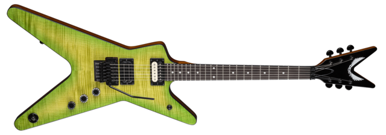
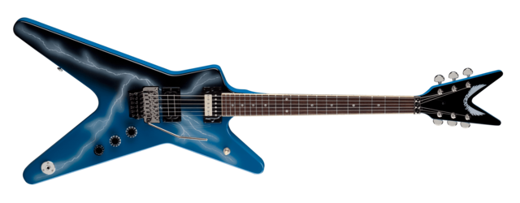
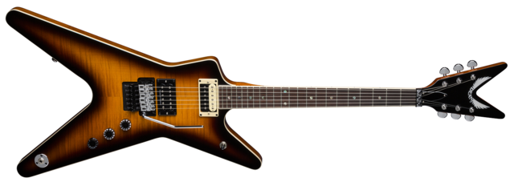

Dimebag Darrell speelde altijd een ML vormige gitaar. Hij speelde in zijn carriere voornamelijk gitaren van Dean en Washburn, maar heeft altijd een ML-vormige gitaar gebruikt.
Er zijn veel verschillende soorten ML gitaren die Dimebag gebruikte. Een paar voorbeelden hiervan zijn de Slime gitaar, die er zo uitzag:

Ook gebruikte Dimebag tijdens de Monsters of Rock festival in 1994 tijdens zijn optreden met Pantera (zijn band) de blue lightning gitaar, die beter bekend staat onder zijn fans als de "Dean from Hell".

Misschien is zijn meest bekende gitaar nog wel de Far Beyond Driven gitaar. Het was een simpele gitaar waar Dime graag mee optrad.
